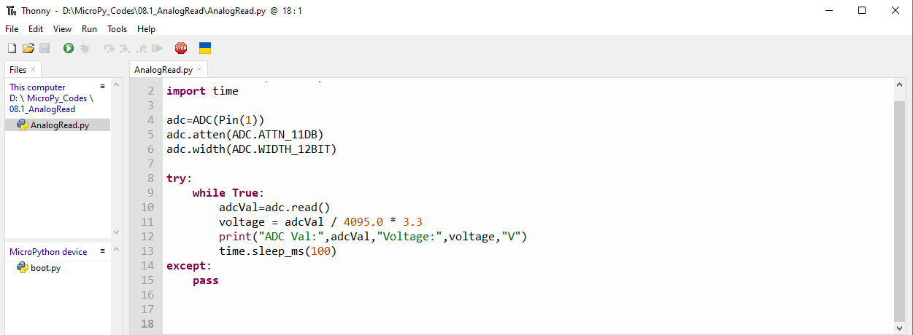
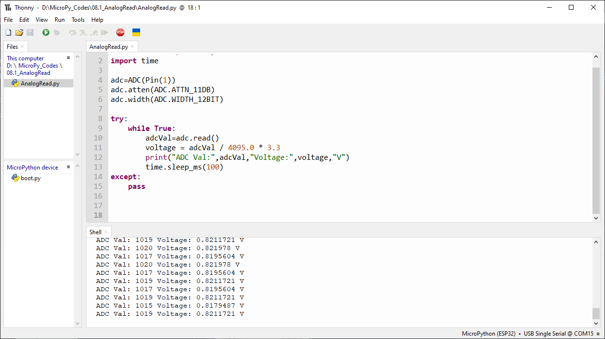

Chapter 8 AD Converter
In this chapter, we will learn how to use ESP32-S3 to read analog signals.
Project 8.1 Read the Voltage of Potentiometer
In this project, we will use the ADC function of ESP32-S3 to read the voltage value of the potentiometer and print it out through the serial monitor.
Component List
ESP32-S3-WROOM x1
GPIO Extension Board x1
830 Tie-Points Breadboard x1
Potentiometer(10k) x1
Jumper Wire x3
Component knowledge
Potentiometer
Connect

Code
Move the program folder “Super_Starter_Kit_for_ESP32_S3/Python/Python_C odes” to disk(D) in advance with the path of “D:/Micropython_Codes”.
Open “Thonny”, click “This computer” >> “D:” >> “Micropython_Codes” >> “08.1_Analog Read and then click “AnalogRead.py”.
08.1_AnalogRead
Click “Run current script” and observe the message printed in “Shell”.
The following is the program code:
from machine import ADC,Pin
import time
adc=ADC(Pin(1))
adc.atten(ADC.ATTN_11DB)
adc.width(ADC.WIDTH_12BIT)
try:
while True:
adcVal=adc.read()
voltage = adcVal / 4095.0 * 3.3
print("ADC Val:",adcVal,"Voltage:",voltage,"V")
time.sleep_ms(100)
except:
pass